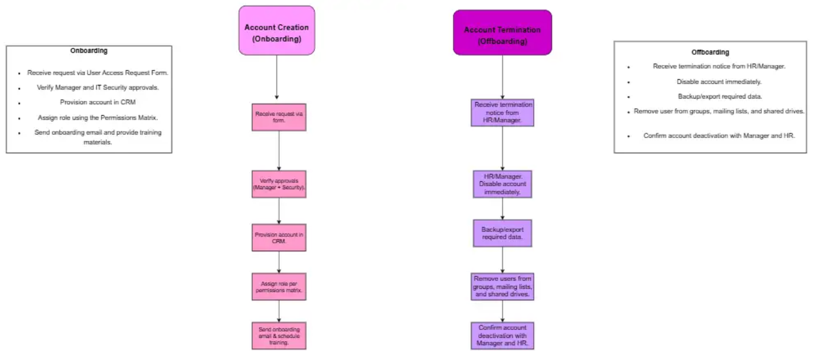

1. Introduction
As TechFlow prepares to launch its new CRM system, ensuring secure and standardized user account management is a top priority. Without a structured framework, the organization risks:
- Duplicate or orphaned accounts
- Improper access levels (too much or too little)
- Data leaks and security breaches
- Compliance issues with data protection regulations
This framework outlines a step-by-step guide for account onboarding, role changes, and offboarding, supported by best practices and governance controls.
Onboarding/Offboarding Workflow

2. Account Creation (Onboarding)
Objective: Provide new employees and early adopters with secure, timely access to the CRM while ensuring proper approvals and training.
Steps in the Workflow:
- Submission of an Access Request:
- The User Access Request Form is filled out by the employee's manager.
- The form contains: department, necessary role, employee data, and access reason.
- Verification of Approval:
- Managerial clearance is necessary.
- For higher positions, IT security approval is required.
- Provisioning:
- Support will use centralized authentication to set up the account in the CRM.
- Permissions Matrix must be used to assign the appropriate role.
- Training and Communication:
- Provide security guidelines and login credentials via onboarding email.
- Training materials must be completed.
- Documentation:
- Record every action in the ticketing system (Freshdesk).
3. Account Termination (Offboarding)
Objective: Ensure immediate and secure removal of access when an employee leaves TechFlow or no longer requires CRM access.
- Submit Request: Manager submits updated User Access Request Form specifying role change.
- Approval Verification: Role change follows the same approval workflow as new account creation.
- Update Permissions: IT updates role assignments based on the Permissions Matrix.
- Audit & Documentation: Record the role change in the ticketing system and maintain an audit trail.
4. Role Changes
Role changes follow the same request and approval workflow as new accounts. Once approved, IT adjusts role permissions according to the matrix and logs the change in the ticketing system.
5. Best Practices
- Principle of Least Privilege (PoLP): Grant only minimum access required for the role.
- Mandatory Approvals: No access without manager and security validation.
- Multi-Factor Authentication: Enforce for all accounts.
- Periodic Access Reviews: Conduct quarterly reviews of all CRM accounts.
- Centralized IAM: Manage all access centrally for better control.
- Audit Logging: Maintain logs of account creation, role changes, and terminations.
- Separation of Duties: Ensure no single individual has unchecked administrative power.
6. Sample Access Tickets
Ticket #12345
User: John Doe
Request: New CRM account for Marketing role
Status: Approved
Assigned To: IT Support Team
Ticket #12346
User: Jane Smith
Request: Offboard CRM access
Status: Completed
Assigned To: IT Support Team